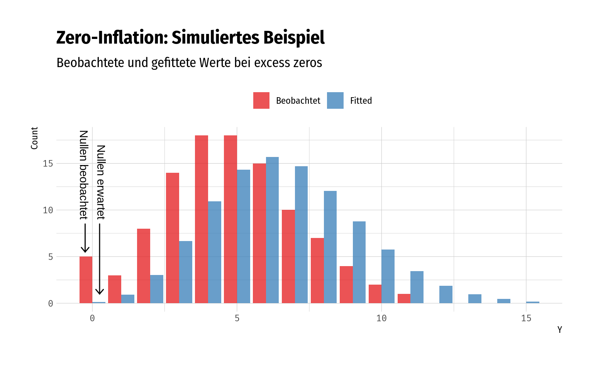
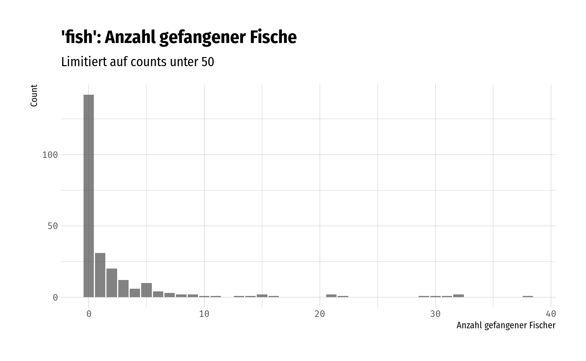

4.2 Zero-Inflation (ZI)
Problem: “Excess zeros”, i.e. das Modell sagt für \(P(y_i = 0\ |\ x_i)\) eine deutlich kleinere Wahrscheinlichkeit vor, als in gegebenen Daten tatsächlich vorliegen.
Zero-inflation hängt eng mit overdispersion zusammen. Sie kann Ursache für overdispersion sein, allerdings bedeutet das nicht direkt, dass auch ein entsprechend auf ZI-fokussiertes Modell (ZIP, ZINB…) verwendet werden muss – ggf. lässt sich die overdispersion bereits durch ein anderes geeignetes Modell “auffangen”. Zum Beispiel zeigt Winkelmann (2010), dass die NB allgemein eine größere Anzahl an Nullen erwartet als die Poisson.

4.2.1 Vergleich von Zero-Inflated models
Zum Vergleich zwischen Zählmodellen und ihren zero-inflated Gegenstücken (e.g. Poisson vs. ZIP oder NB vs. ZINB) wird in der Literatur häufig der Vuong-Test (Vuong 1989; Desmarais und Harden 2013) verwendet. Dieser Test ist explizit für den Vergleich von ungeschachtelten Modellen entworfen (im Gegensatz zu z.B. dem Likelihood Ratio test). Wilson (2015) kritisiert dieses Vorgehen mit der Begründung (und Demonstration), dass zero-inflated Modelle nicht ungeschachtelt mit ihren ursprünglichen Zähmodellen sind. Auch Perumean-Chaney u. a. (2013) und Hilbe (2014), die in diesem Dokument mehrfach zitiert werden, verwenden den Vuong-Test auf diese Weise.
Das Paper (Wilson (2015)) ist recht kurz und definitiv einen Blick Wert, insbesondere da ich (Lukas) mir bisher nicht zutraue zu beurteilen, wer in dieser Frage “Recht” hat.
The misuse of the test stems from misunderstanding of what is meant by the terms “non-nested model” and “nested model”. As is the case with many frequently used terms their meanings are approximately understood by many, but precisely understood by few.
— Wilson (2015), p. 52
4.2.2 Modellierung
Für die Modellierung von zero-inflated Daten stehen primär zwei Möglichkeiten zur Verfügung (vgl. auch Hilbe (2014), p. 19):
- Zero-inflated models: Mixture models, die aus zwei Wahrscheinlichkeitsfunktionen eine neue Wahrscheinlichkeitsfunktion generieren, die sowohl Nullen als auch positive counts beschreibt, allerdings nun auch einen zero-inflation-Parameter hat (siehe Abschnitt 3.6).
- Hurdle models: Getrennte Modellierung von Nullen und positiven counts in zwei separaten Modellen (siehe Abschnitt B.3).
Ob hurdle model oder zero-inflated model die bessere Wahl ist hängt mitunter davon ab, welche Annahmen über die Ursache der Nullen getroffen werden können.
Wenn es eine echte Trennung der Mechanismen (“separation of mechanisms”) gibt, die die Nullen und die positiven counts verursachen, dann wäre ein hurdle model eher angemessen. IDas würde allerdings auch annehmen, dass alle Nullen die gleiche Ursache haben.
Wenn sich die Nullen überlappen, es also keine getrennten Prozesse zu geben scheint, dann wären zero-inflated models angemessen (Hilbe 2014, p. 209).
Als Veranschaulichung für zwei sich überlappende Mechanismen können wir das fish-Beispiel auf dieser UCLA-Tutorialseite verwenden. Hier ist die Anzahl der gefangenen Fische an einem Wochenende in einem Park die Zählvariable.
| N | Missing | Mittelwert | Varianz | Range |
|---|---|---|---|---|
| 250 | 0 | 3.3 | 135.37 | [0, 149] |
# Barchart für counts <= 50, Spannweite sehr groß
fish %>%
filter(count <= 50) %>%
ggplot(aes(x = count)) +
geom_bar(alpha = .75) +
scale_x_continuous() +
labs(
title = "'fish': Anzahl gefangener Fische",
subtitle = "Limitiert auf counts unter 50",
x = "Anzahl gefangener Fischer", y = "Count"
)
Die Anzahl der Nullen ist hier auffallend groß – allerdings beobachten wir hier auch zwei unterschiedliche Mechanismen, die sich überlappen: Eine Gruppe kann das ganze Wochenende geangelt haben, während eine andere Gruppe gar nicht geangelt hat – beide Gruppen werden jedoch am Ende nach der Anzahl ihrer gefangenen Fische befragt, weshalb wir in den Daten Nullen mit unterschiedlichem “Ursprung” erhalten
Da es hier nicht angemessen wäre, die Nullen und die positiven counts getrennt zu Modellieren, würden wir hier ein zero-inflated Modell (z.B ZIP, ZINB, …) verwenden.
Literatur
Desmarais, Bruce A., und Jeffrey J. Harden. 2013. „Testing for Zero Inflation in Count Models: Bias Correction for the Vuong Test“. The Stata Journal 13 (4): 810–35. https://doi.org/10.1177/1536867X1301300408.
Hilbe, Joseph M. 2014. Modeling Count Data. Cambridge: Cambridge University Press. https://doi.org/10.1017/CBO9781139236065.
Perumean-Chaney, Suzanne E., Charity Morgan, David McDowall, und Inmaculada Aban. 2013. „Zero-Inflated and Overdispersed: What’s One to Do?“ Journal of Statistical Computation and Simulation 83 (9): 1671–83. https://doi.org/10.1080/00949655.2012.668550.
Vuong, Quang H. 1989. „Likelihood Ratio Tests for Model Selection and Non-Nested Hypotheses“. Econometrica 57 (2): 307. https://doi.org/10.2307/1912557.
Wilson, Paul. 2015. „The Misuse of the Vuong Test for Non-Nested Models to Test for Zero-Inflation“. Economics Letters 127 (Februar): 51–53. https://doi.org/10.1016/j.econlet.2014.12.029.
Winkelmann, Rainer. 2010. Econometric Analysis of Count Data. 5th ed. Berlin: Springer Berlin.